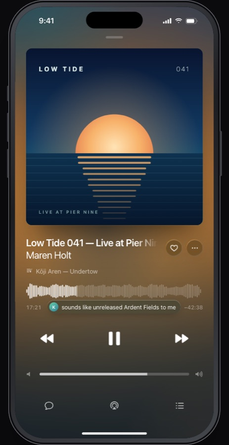
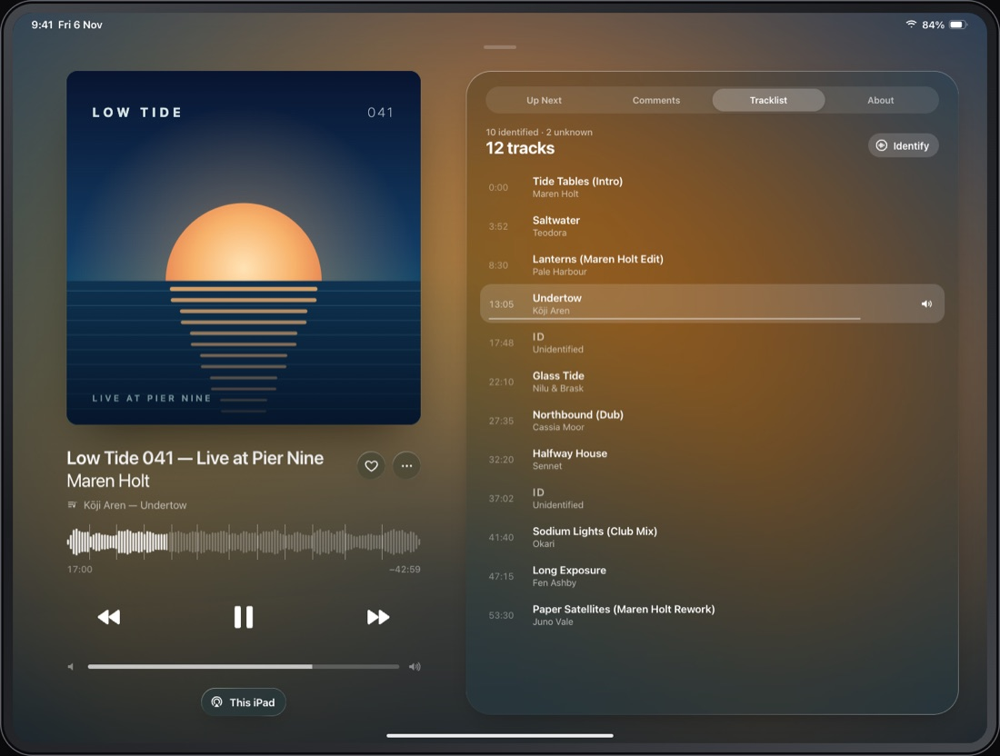
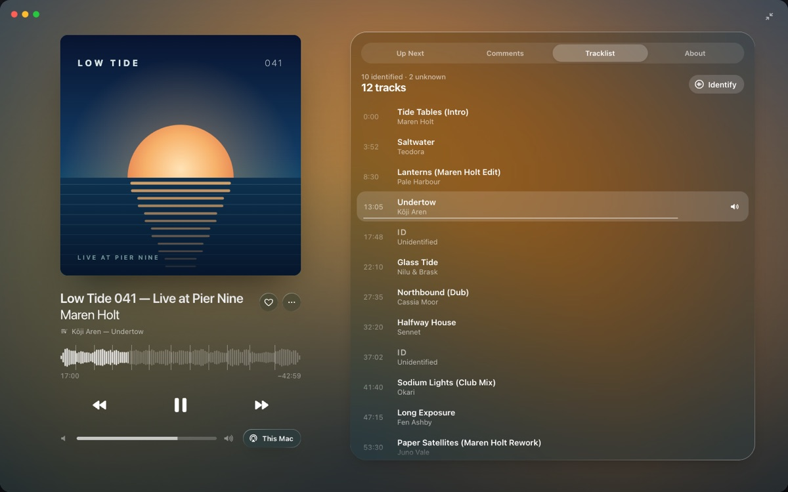
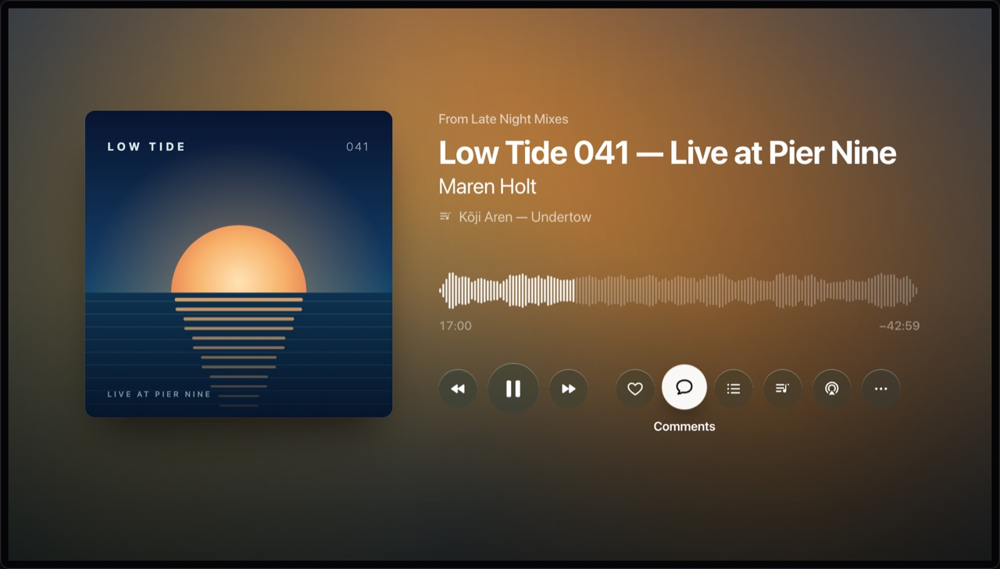
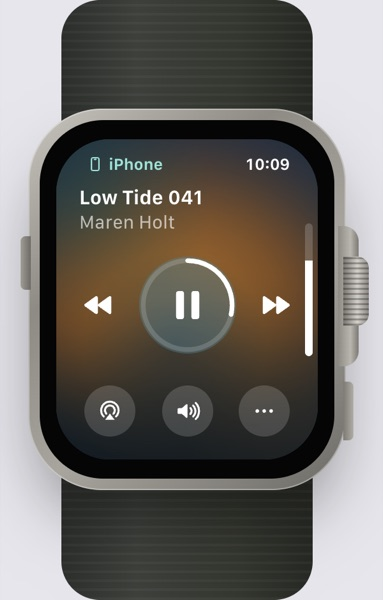

iPhone 17 Pro Max
One calm screen. Up Next, Comments and Tracklist are modes: the artwork morphs into a header and the transport docks below.

One calm screen. Up Next, Comments and Tracklist are modes: the artwork morphs into a header and the transport docks below.

Side by side. Player on the left; Up Next, Comments, Tracklist and About always visible on the right.

A compact transport bar with Play On, an inspector for the panes, and a full-window Now Playing.


Artwork-tinted Now Playing with a progress ring and the crown for volume. Scroll over the watch to turn it.
Everything fits above the fold. Lists are modes rather than a scroll: the artwork shrinks into a header and the waveform and transport stay docked.
Each track's palette drives the drifting background, the glass tint and one tinted element: the artist name. Track changes cross-fade. The brand copper only appears in app chrome.
Transport glyphs are bare. Glass is reserved for Like, •••, sheets, menus and panels, so there are never more than two or three glass shapes on screen.
Only three things move on their own: the playhead, the slow background drift and the artwork breathing with the music. Everything else moves when you touch it, on transforms and opacity with spring curves.
Pausing shrinks the artwork. Scrubbing grows the waveform under your finger. Moving to another device nudges the artwork and shows where it's playing.
The current entry sits under the artist and in the waveform's segments. The list follows the playhead, and Identify fills unknown IDs in place.
In Playing, at most one comment bubble appears near the waveform, at most every seven seconds. The full conversation lives in Comments and arrives at its timestamp.
Turns off the drift, breathing and morphs. Mode changes become cross-fades and the comment bubble only fades.